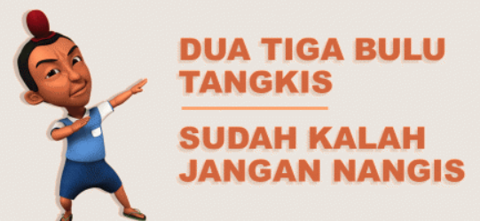
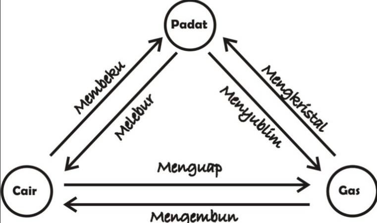
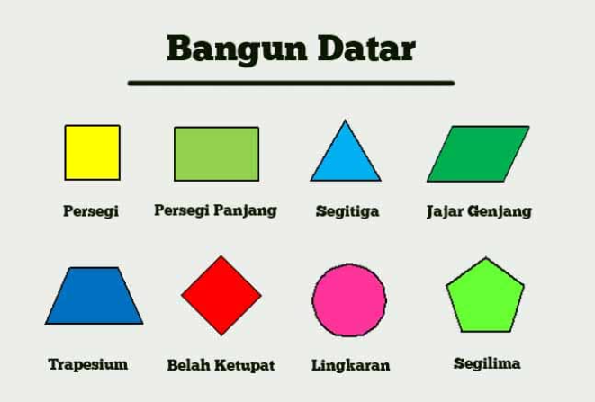
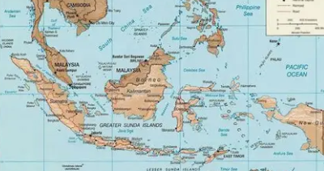
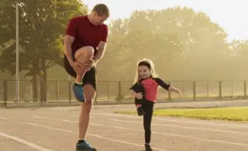
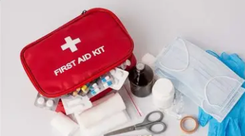
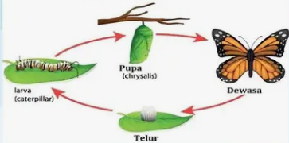

Temukan Materi Edukasi
Pengertian dan Karakteristik Globalisasi Lihat Selengkapnya
Bentuk-Bentuk Interaksi Sosial
Lihat Selengkapnya

Pengertian Pantun, ciri, fungsi, dan struktur
Lihat SelengkapnyaCahaya dan Sifatnya
Lihat Selengkapnya

Perubahan Sifat Benda
Lihat Selengkapnya

Rumus bangun datar
Lihat Selengkapnya

Letak Geografis Indonesia Lihat Selengkapnya
Hak dan Kewajiban Warga Negara
Lihat Selengkapnya

Aktivitas Fisik dan Kebugaran Tubuh
Lihat Selengkapnya

Pencegahan Cedera dan P3K
Lihat Selengkapnya
